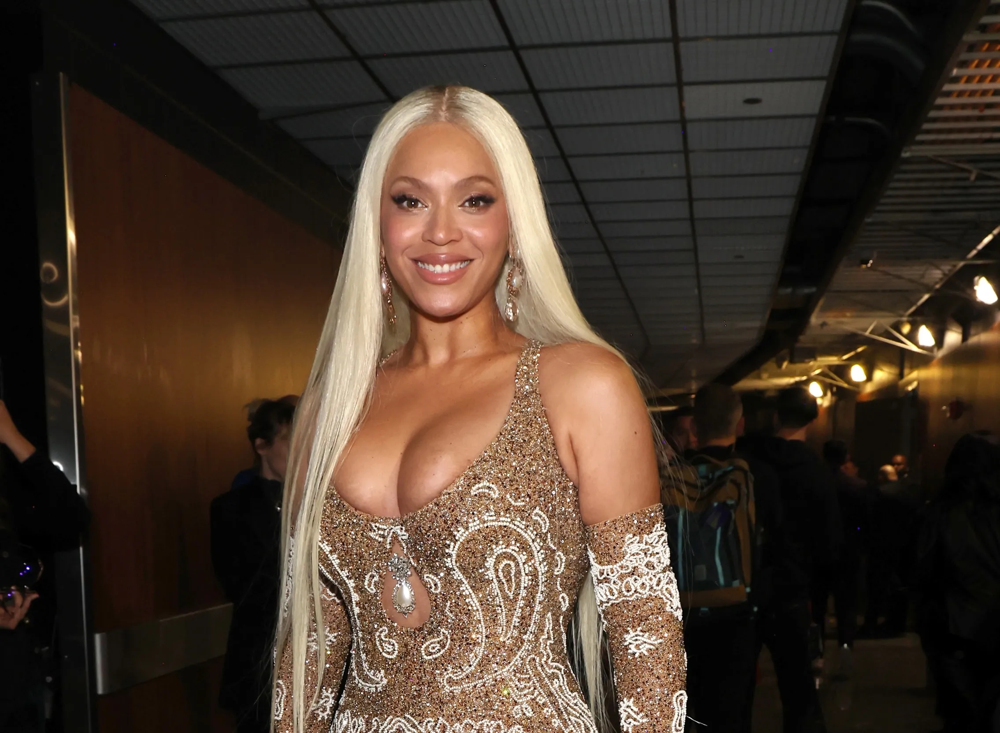

FEATURES

Drake
Drake’s soulful, game-changing artistry—where clever bars fuse with lush hooks, turning hip-hop into a vivid, heart-pounding odyssey.

Kendrick Lamar
Kendrick’s fierce, poetic brilliance—where razor-sharp lyrics dance with deep beats, crafting hip-hop into a bold, thought-provoking masterpiece.
Frank Ocean
Frank Ocean’s dreamy, soul-baring genius—where silky vocals glide over lush soundscapes, spinning R&B into a tender, timeless reverie.

Billie Eilish
Billie Eilish’s haunting, whisper-soft power—where eerie beats meet raw emotion, twisting pop into a dark, mesmerizing confession.

The Weeknd
The Weeknd’s sultry, cinematic flair—where pulsing rhythms blend with aching falsettos, shaping R&B into a thrilling, neon-lit escape.

Tyler, The Creator
Tyler, The Creator’s wild, kaleidoscopic vision—where quirky beats clash with bold rhymes, morphing hip-hop into a vibrant, offbeat wonderland.

Travis Scott
Travis Scott’s chaotic, electrified genius—where thumping bass meets hazy chants, twisting trap into a wild, adrenaline-soaked fever dream.
Ye
Kanye’s audacious, boundary-shattering brilliance—where daring beats fuse with raw verses, forging hip-hop into a fearless, visionary spectacle.

Nicki Minaj
Nicki Minaj’s fierce, dazzling reign—where razor-sharp flows meet playful swagger, sculpting rap into a vibrant, unapologetic throne.
NBA YoungBoy
NBA YoungBoy’s gritty, soul-baring fire—where relentless flows collide with raw pain, carving rap into a fierce, street-born anthem.

Playboi Carti
Playboi Carti’s reckless, hypnotic wave—where minimalist beats fuse with wild ad-libs, twisting trap into a surreal, high-energy haze.
Lil Uzi Vert
Lil Uzi Vert’s vibrant, rebellious spark—where punchy flows meet cosmic beats, spinning rap into a bold, otherworldly thrill ride.

Lil Peep
Lil Peep’s tender, anguished cry—where lo-fi beats blend with raw heartache, melding rap and emo into a haunting, soul-stirring echo.

Juice WRLD
Juice WRLD’s heartfelt, melodic storm—where quick-witted bars meet aching hooks, fusing rap and emo into a vivid, bittersweet surge.

Mac Miller
Mac Miller’s warm, introspective glow—where jazzy beats mingle with honest rhymes, crafting hip-hop into a soulful, laid-back journey.

50 Cent
50 Cent’s gritty, commanding hustle—where hard-hitting beats meet street-smart bars, forging rap into a bold, unbreakable legacy.

Eminem
Eminem’s fierce, razor-edged mastery—where lightning-fast rhymes clash with raw emotion, sculpting rap into a gripping, unfiltered saga.
Doja Cat
Doja Cat’s playful, genre-blending magic—where quirky hooks meet slick beats, twisting pop and rap into a bold, infectious groove.

Chief Keef
Chief Keef’s raw, relentless thunder—where booming bass meets icy flows, birthing drill into a gritty, untamed street symphony.

Beyoncé
Beyoncé’s radiant, powerhouse grace—where soulful belts soar over bold rhythms, molding pop and R&B into a fierce, majestic reign.

Young Thug
Young Thug’s wild, melodic chaos—where unpredictable flows twist with vibrant beats, reshaping rap into a thrilling, genre-defying whirlwind.

Yeat
Yeat’s futuristic, hypnotic pulse—where glitchy beats fuse with icy cadences, morphing rap into a sleek, otherworldly vibe.
Taylor Swift
Taylor Swift’s heartfelt, storytelling charm—where tender melodies weave with vivid lyrics, crafting pop into a warm, timeless embrace.

Ariana Grande
Ariana Grande’s soaring, sugary allure—where powerhouse vocals glide over glossy beats, spinning pop and R&B into a dazzling, irresistible rush.
Sabrina Carpenter
Sabrina Carpenter’s bubbly, polished charm—where catchy hooks dance with sweet vocals, crafting pop into a bright, irresistible glow.
Kodak Black
Kodak Black’s raw, Southern grit—where heavy beats meet drawling flows, carving rap into a bold, unfiltered street pulse.
Future
Future’s syrupy, trap-lord reign—where booming beats meet slurred flows, crafting rap into a dark, hypnotic street empire.
XXXTentacion
XXXTentacion’s raw, chaotic soul—where jagged beats collide with piercing cries, blending rap and emo into a fierce, haunting storm.
J. Cole
J. Cole’s grounded, lyrical fire—where soulful beats meet sharp storytelling, crafting hip-hop into a deep, relatable odyssey.
Ken Carson
Ken Carson’s chaotic, futuristic edge—where glitchy beats fuse with reckless flows, twisting trap into a bold, neon-drenched haze.
Destroy Lonely
Destroy Lonely’s moody, melodic drift—where hazy beats blend with icy vocals, shaping trap into a sleek, introspective vibe.